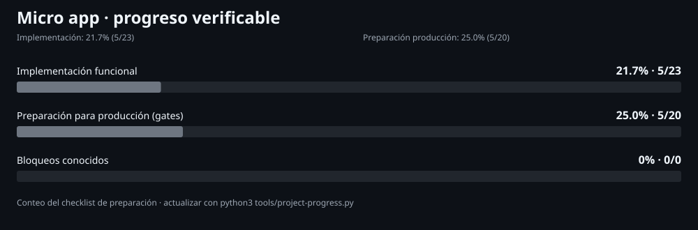

Micro app — progreso y preparación para producción

Implementación funcional: 21.7% (5/23). Preparación para producción: 25% (5/20).
Los porcentajes cuentan criterios inventariados con evidencia, no estiman fechas ni garantizan producción.
| Área | Completado | Porcentaje |
|---|
| Implementación funcional | 5/23 | 21.7% |
|---|
| Preparación para producción (gates) | 5/20 | 25% |
|---|
Bloqueos P0 conocidos
- OAuth Google, allowlist y verificación de correo no verificados/implementados
- Autorización multiempresa completa pendiente
- POS, ventas, inventario y devoluciones completos pendientes
- E2E de backend real pendiente; las actuales usan API simulada
- Validación fiscal y restauración desde backup pendientes
Fuente: docs/PRODUCTION_READINESS.md · 2026-10-18